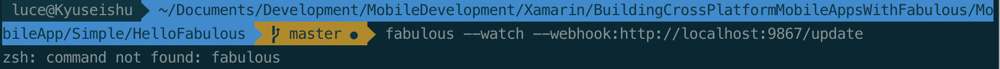
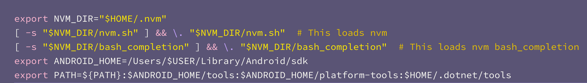

So yesterday I had the pleasure of not only speaking at NDC London but watching my good friend Jim Bennett talk immediately after me on Mobile Development in F# using Fabulous.
Unsurprisingly, it left me super excited and I was keen to have a go. One of the things that makes writing apps with Fabulous so appealing is the live reload feature currently in preview which has a great guide for getting started.
The issue I faced though was that despite having followed the guide, when I went to start the watcher for my project in the terminal, it didn't recognise fabulous as a command:

Now the reason for this was because the guide assumes that you are using bash as your scripting language in the terminal when in fact I use zsh. I reached out to Jim for help who kindly pointed me towards a Github issue for someone facing the same issue with a different tool.
One of the solutions mentions adding the path to the tools to your PATH in the .zshrc file. This can be found in ~/.zshrc. I tried this and it worked!
So what do you have to add? The answer is $HOME/.dotnet/tools.
Now my path variable already had stuff in it for the Android tooling so all I had to do was put a : and append that line and after restarting my terminal application, in this case iTerm2, boom it worked! The only thing to make sure is that when you run the command to start the watcher, you are in the folder for your shared project in the solution.
I wanted to share this with you so hopefully you can now quickly solve your issue or prepare for it before you even get started!
 A snippet from my .zshrc file showing how it looks after the change!